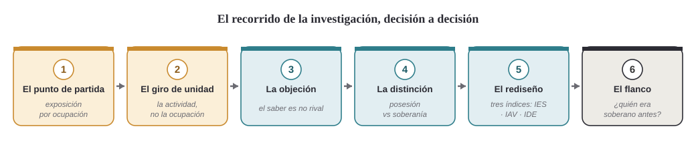
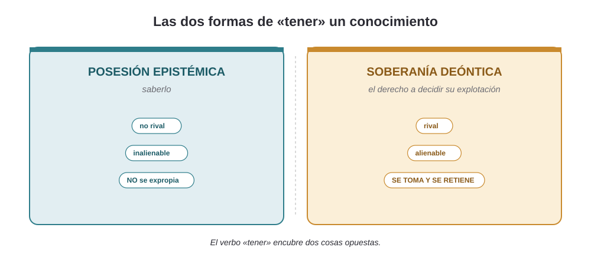
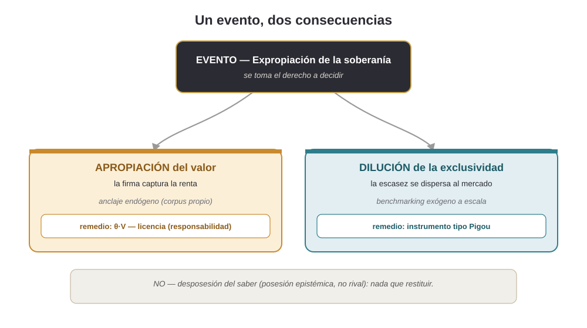

Programa ITEA · 2026 · Guía para el examinador
Por qué cada elección de investigación es la correcta —y qué alternativa se descartó y por qué.
Esta guía no resume resultados: justifica decisiones. Recorre las elecciones que estructuran el programa ITEA y, para cada una, expone el problema que resolvía, por qué se adoptó y qué alternativa se dejó atrás. Está pensada para que un revisor entienda la solidez metodológica y para que un evaluador vea la novedad y el alcance. El hilo conductor es una analista de riesgo de crédito, «Ana».

El problema: los índices al uso miden exposición a nivel de ocupación, pero la IA no afecta por igual a todo un puesto. Promediar por ocupación oculta el fenómeno.
Por qué esta decisión: al descomponer 47.810 tareas, el 82–94 % de la variación vive dentro de la ocupación, no entre ocupaciones. La unidad correcta es la actividad. Converge, además, con evidencia independiente (Gathmann et al., 2024; Lewandowski et al., 2025; Caselli et al., 2025).
Alternativa descartada: seguir en la ocupación (SOC/ISCO) — hereda la atenuación por agregación y no ve lo que de verdad cambia.
El problema: la mayoría de índices se validan contra juicios de exposición potencial, que son circulares (opinión contra opinión).
Por qué esta decisión: ITEA se contrasta a nivel de tarea contra el uso real de IA (Anthropic Economic Index) y muestra una validez discriminante limpia: el constructo sigue a la GenAI y es ciego a la automatización clásica, y la separación se sostiene dentro de cada perfil. Es el activo más fuerte del programa.
Alternativa descartada: validar contra encuestas de exposición percibida — no distingue medición de opinión.
El problema: «expropiación» se usaba en dos sentidos —potencial medido y evento normativo— y eso invita a que un revisor acuse de tautología.
Por qué esta decisión: el conocimiento es no rival: no se desposee. El empírico mide un potencial (expropiabilidad = exposición × codificabilidad); el conceptual teoriza el evento. Así, el hallazgo estrella «expropiado pero retenido» deja de ser una paradoja.
Alternativa descartada: mantener «expropiación» a secas — cada revisor pondría la objeción de la no rivalidad.
El problema: la intuición «la IA le quita su saber a Ana» es falsa (ella lo conserva), lo que parecía vaciar el argumento.
Por qué esta decisión: «tener» un saber encubre dos cosas: poseerlo (epistémico, no rival, inalienable — no se expropia) y el derecho a decidir su explotación (deóntico, rival, alienable — eso se toma y se retiene). Con Hohfeld, Honoré y Calabresi–Melamed, «expropiación» vuelve a ser literal.
Alternativa descartada: hablar de «pérdida de conocimiento» — insostenible ante la no rivalidad.

El problema: un solo índice fusionaba el evento con sus dos consecuencias, y una cifra así no es falsable.
Por qué esta decisión: tres constructos separados —soberanía (IES), apropiación (IAV) y dilución (IDE)— son operacionalizables, cada uno con su remedio, y producen una predicción contrastable (márgenes vs diferenciales en banca).
Alternativa descartada: conservar el índice compuesto único — elegante pero no operacionalizable.

El problema: el «0 %» de expropiación de la automatización clásica parecía un artefacto de la rúbrica (circularidad).
Por qué esta decisión: se reinterpreta como hallazgo histórico: la codificación se detuvo antes del puente; la ola ERP llenó un depósito «almacenado» que la GenAI es la primera en leer. De ahí la regla de no mezclar la era ERP (1970–2000) y la GenAI (post-2022) en una regresión.
Alternativa descartada: defender el 0 % como propiedad de diseño — expone el flanco de la tautología.
El problema: tratar un solo origen del conocimiento codificado deja fuera la mitad del fenómeno.
Por qué esta decisión: hay dos orígenes con agravios distintos: el trabajador (juicio experto que poseía → expropiación) y el consumidor (conducta agregada que nunca poseyó → extracción). Cada uno pide un remedio distinto.
Alternativa descartada: limitar el marco al trabajador — más defendible, pero incompleto.
El problema: la tentación de contar toda la historia en un solo artículo.
Por qué esta decisión: empírico y conceptual tienen distinta unidad, método, estándar de evidencia y revista. Un paper híbrido no satisface a ningún revisor y amplía la superficie de ataque. La trilogía (empírico = expropiabilidad · conceptual = evento · satélite = remedio θ·V) reparte el trabajo sin solaparse.
Alternativa descartada: fusionar los dos — reintroduce la confusión terminológica que se acaba de resolver.
El problema: toda la fuerza normativa depende de que el trabajador fuera soberano antes del cruce; la doctrina de obra por encargo lo discute.
Por qué esta decisión: se responde en dos registros: la contingencia del reparto (Hettinger, Drahos; la historia legislativa de 1976) y, sobre todo, la acotación al corpus agregado fuera del empleo, donde la obra por encargo no aplica y la titularidad recupera su fuerza.
Alternativa descartada: dar por supuesta la soberanía previa — es el flanco exacto que un revisor ataca primero.
El problema: un aparato coherente genera una falsa sensación de validez.
Por qué esta decisión: se documentan las hipótesis refutadas, la delgadez de la validez convergente y la cautela sobre qué «captura» un modelo (competencia formal vs funcional). Esa franqueza —la Sección 9 del empírico— es, paradójicamente, lo que más confianza genera en un referee.
Alternativa descartada: pulir el abstract hasta borrar las limitaciones — se pierde el activo de credibilidad.
Redirige el aparato tarea-céntrico de Acemoglu–Autor de la sustitución a la captura: no pregunta si el puesto desaparece, sino quién se queda con la renta del juicio ya codificado. Y aporta una distinción propia —posesión epistémica vs soberanía deóntica— que da estatuto literal a la «expropiación» y un hogar teórico reconocido (soberanía de datos, Teece, Calabresi–Melamed).
Validación en la unidad propia contra uso real, con validez discriminante limpia y anclaje externo independiente (AIOE, r = 0,797). Disciplina cronológica explícita y registro honesto de lo refutado. Predicción contrastable (banca: márgenes vs diferenciales).
Conecta con un debate vivo —IA, trabajo y gobernanza del conocimiento en la UE— y ofrece un marco medible y un menú de remedios (consentimiento, θ·V, instrumento pigouviano) para una pregunta de política que hoy no tiene métrica.
Artículo conceptual — DOI (todas las versiones): 10.5281/zenodo.20424899
Manuscrito empírico — DOI: 10.5281/zenodo.20834742
Framework (código y datos) — DOI: 10.5281/zenodo.19578915
Guía de datos y glosario — ITEA_Guia_Datos_y_Glosario.html